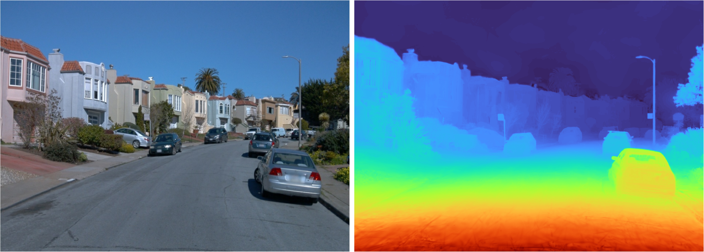
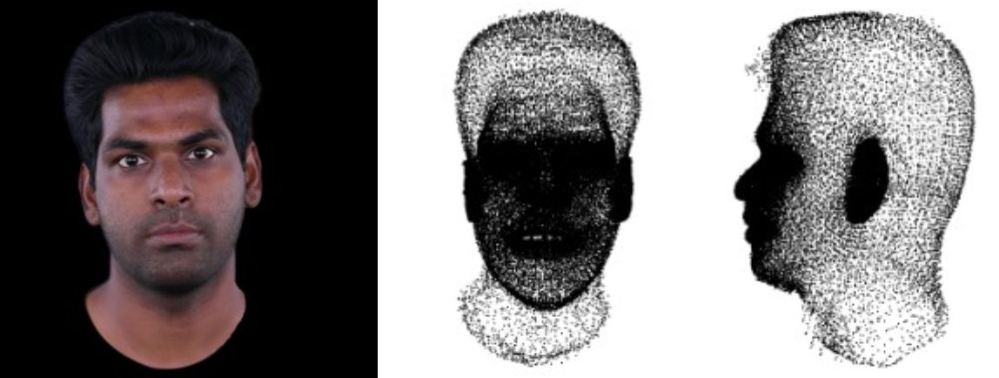
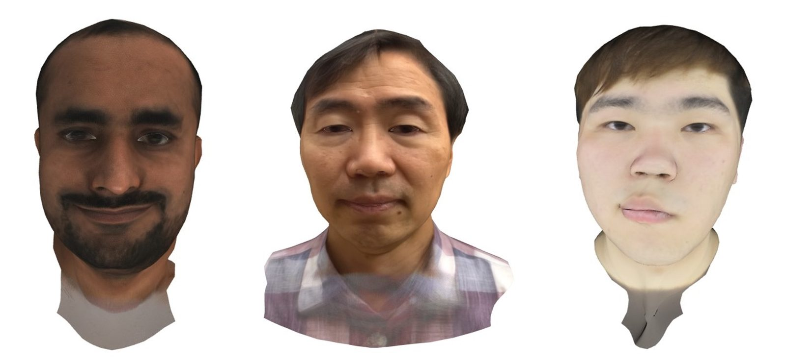
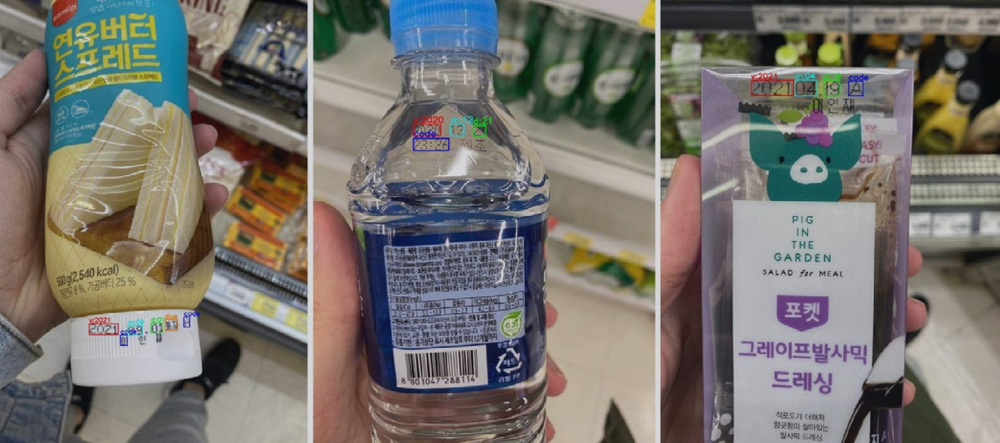
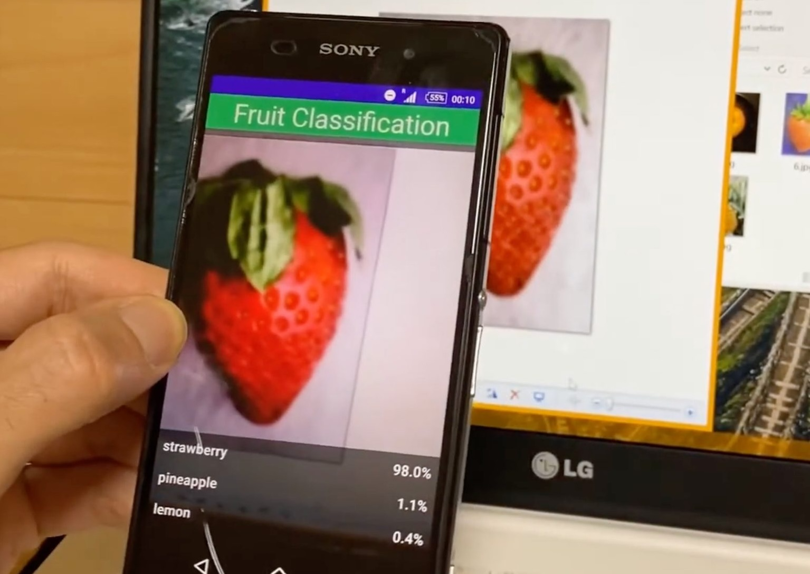
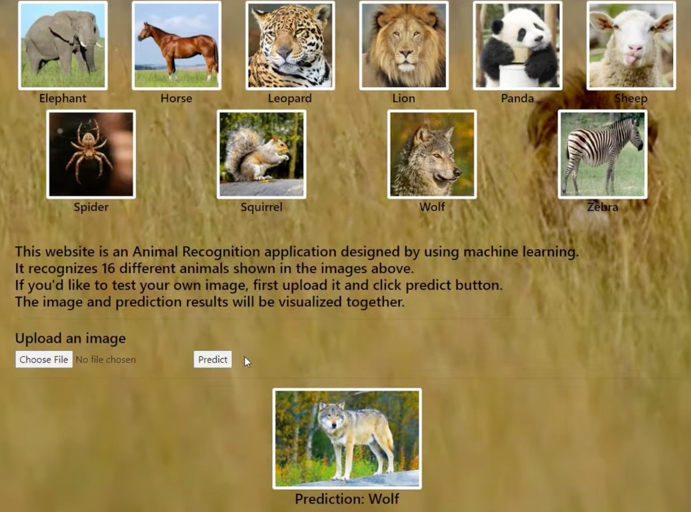
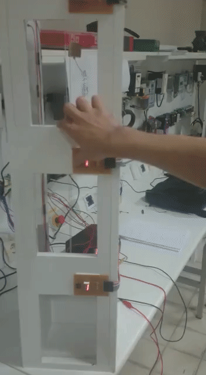

Ahmet Cagatay Seker
Computer Vision Engineer
I recently completed my Ph.D. in AI-Robotics at the University of Science and Technology (UST), where I worked as a research assistant at the Korea Institute of Science and Technology (KIST) in Seoul. My research focuses on computer vision, deep learning, 3D reconstruction, novel view synthesis, neural rendering, and 3D Gaussian Splatting.
Projects

A 3D Gaussian Splatting pipeline for high-fidelity novel-view synthesis from forward-moving monocular street scenes. The approach combines frequency- and error-guided signals to better recover fine structural details that standard reconstruction methods tend to blur or lose, such as road markings, cracks, cables, and other thin boundaries.

A system for building animatable, photorealistic Gaussian head avatars from monocular head videos. It combines mesh rendering and Gaussian rendering to improve geometric accuracy and surface smoothness while preserving photorealistic appearance.

A procedural facial-expression space built for a 3D head-avatar system, which statistically models how blendshape weights vary across a population of faces. This lets expressions be generated and transferred across different identities in a consistent, controllable way and includes a GUI where a user can upload an image and directly select or apply expressions.

A generalized deep-learning framework that automatically detects, parses, and recognizes expiration dates directly from photos of full product packaging, with no manual cropping or alignment. It supports 13 date formats and remains reliable under real-world challenges such as blur, glare, complex backgrounds, distorted text, and multiple printed dates.

A deep-learning fruit-recognition model trained on a self-collected, multi-viewpoint image dataset to ensure robustness to variations in viewing angle, lighting, and background. The model is deployed in an Android application, enabling real-time recognition through the device's built-in camera.

An image-classification model covering a range of common animal categories, served through a lightweight Flask web application. Users upload a photo and instantly receive the predicted animal class, making the model easy to demo and interact with.

A fully functional three-floor elevator prototype built end to end, from ladder-logic programming for the PLC controller to custom PCB layouts designed in Proteus and the physical assembly and testing of the complete electromechanical system.